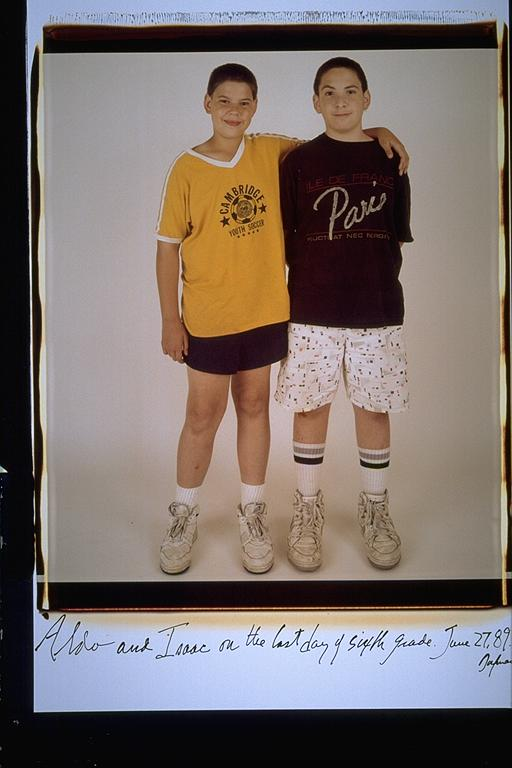

Aldo: What funny looking kids we were. About four or five years prior to this picture, we were young, cute children. But at this age Ithink we beyond cute, but were still young. So were still young......but no so cute anymore, a tough age.
Isaac: I guess short hair was the in thing at this point. I'm actually taller than Aldo here, which is a rare occurrence. In a few years he'd pass 5'9" and never look back. He still loves soccer... And I seem to be into Paris. It's funny to see how easily we'd put our arms around each other. During the teenage years, we wouldn't even stand close to each other. It's nice to see how easily we expressed our friendship at this point.
